Brentford vs. Arsenal Informe del partido – Viernes Agosto 13, 2021

Resumen del partido
1:0
1:0
1:0
1:0
2:0
2:0
2:0
2:0
Estadísticas del equipo
| Brentford
|
|
|---|---|
| Posesión del balón | |
|
36%
|
64%
|
| Precisión de pase | |
|
217 of 343 — 63%
|
84% — 522 of 620
|
| Disparos a puerta | |
|
3 of 8 — 38%
|
18% — 4 of 22
|
| Salvadas | |
|
4 of 4 — 100%
|
33% — 1 of 3
|
| Tarjetas | |
|
|
|
Brentford Estadísticas de Jugador
| Rendimiento | Expectativa | ACT | Pases | Transportes | Tomas | |||||||||||||||||||||||||
|---|---|---|---|---|---|---|---|---|---|---|---|---|---|---|---|---|---|---|---|---|---|---|---|---|---|---|---|---|---|---|
| Jugador | núm. | País | Posc | Edad | Mín | Gls. | Ass | TP | TPint | Dis | DaP | TA | TR | Toques | Tkl | Int | Bloqueos | xG | npxG | xAG | ACT | ACG | Cmp | Int. | PrgP | Transportes | PrgC | Att | Succ | |
| Ivan Toney | 17 | eng ENG | FW | 25-150 | 90 | 0 | 0 | 0 | 0 | 0 | 0 | 0 | 0 | 33 | 1 | 0 | 0 | 0.0 | 0.0 | 0.1 | 1 | 0 | 11 | 26 | 42.3 | 4 | 11 | 0 | 1 | 1 |
| Bryan Mbeumo | 19 | cm CMR | FW | 22-006 | 85 | 0 | 0 | 0 | 0 | 2 | 0 | 0 | 0 | 35 | 1 | 0 | 1 | 0.3 | 0.3 | 0.1 | 3 | 0 | 15 | 23 | 65.2 | 1 | 17 | 2 | 3 | 2 |
| Marcus Forss | 9 | fi FIN | FW | 22-056 | 5 | 0 | 0 | 0 | 0 | 0 | 0 | 0 | 0 | 5 | 0 | 0 | 0 | 0.0 | 0.0 | 0.0 | 0 | 0 | 2 | 3 | 66.7 | 0 | 3 | 1 | 1 | 0 |
| Vitaly Janelt | 27 | de GER | CM | 23-095 | 90 | 0 | 0 | 0 | 0 | 0 | 0 | 0 | 0 | 39 | 3 | 0 | 1 | 0.0 | 0.0 | 0.0 | 1 | 0 | 19 | 30 | 63.3 | 2 | 12 | 0 | 0 | 0 |
| Christian Nørgaard | 6 | dk DEN | CM | 27-156 | 90 | 1 | 0 | 0 | 0 | 2 | 1 | 0 | 0 | 40 | 2 | 1 | 0 | 0.7 | 0.7 | 0.0 | 0 | 0 | 25 | 33 | 75.8 | 5 | 12 | 1 | 1 | 1 |
| Frank Onyeka | 15 | ng NGA | CM | 23-224 | 79 | 0 | 0 | 0 | 0 | 1 | 0 | 0 | 0 | 26 | 2 | 0 | 0 | 0.1 | 0.1 | 0.1 | 2 | 0 | 14 | 17 | 82.4 | 2 | 10 | 2 | 2 | 1 |
| Mads Bidstrup | 28 | dk DEN | CM | 20-169 | 11 | 0 | 0 | 0 | 0 | 0 | 0 | 0 | 0 | 8 | 0 | 1 | 0 | 0.0 | 0.0 | 0.0 | 0 | 0 | 4 | 4 | 100.0 | 0 | 1 | 0 | 0 | 0 |
| Rico Henry | 3 | eng ENG | WB | 24-036 | 90 | 0 | 0 | 0 | 0 | 0 | 0 | 0 | 0 | 38 | 3 | 0 | 2 | 0.0 | 0.0 | 0.0 | 2 | 0 | 21 | 25 | 84.0 | 3 | 12 | 1 | 1 | 0 |
| Sergi Canós | 7 | es ESP | WB | 24-192 | 90 | 1 | 0 | 0 | 0 | 3 | 2 | 0 | 0 | 44 | 7 | 3 | 1 | 0.1 | 0.1 | 0.3 | 2 | 0 | 13 | 23 | 56.5 | 1 | 18 | 2 | 0 | 0 |
| Ethan Pinnock | 5 | jm JAM | CB | 28-076 | 90 | 0 | 1 | 0 | 0 | 0 | 0 | 0 | 0 | 59 | 0 | 3 | 2 | 0.0 | 0.0 | 0.0 | 1 | 1 | 30 | 46 | 65.2 | 4 | 21 | 0 | 1 | 1 |
| Pontus Jansson | 18 | se SWE | CB | 30-181 | 90 | 0 | 0 | 0 | 0 | 0 | 0 | 0 | 0 | 30 | 0 | 1 | 1 | 0.0 | 0.0 | 0.0 | 0 | 0 | 17 | 22 | 77.3 | 0 | 14 | 0 | 0 | 0 |
| Kristoffer Ajer | 20 | no NOR | CB | 23-118 | 70 | 0 | 0 | 0 | 0 | 0 | 0 | 0 | 0 | 41 | 1 | 0 | 0 | 0.0 | 0.0 | 0.3 | 1 | 0 | 21 | 36 | 58.3 | 0 | 11 | 0 | 1 | 1 |
| Mads Bech Sørensen | 29 | dk DEN | CB | 22-218 | 20 | 0 | 0 | 0 | 0 | 0 | 0 | 0 | 0 | 4 | 0 | 0 | 0 | 0.0 | 0.0 | 0.0 | 0 | 0 | 0 | 4 | 0.0 | 0 | 0 | 0 | 0 | 0 |
| David Raya | 1 | es ESP | GK | 25-332 | 90 | 0 | 0 | 0 | 0 | 0 | 0 | 0 | 0 | 53 | 0 | 0 | 0 | 0.0 | 0.0 | 0.0 | 0 | 0 | 25 | 51 | 49.0 | 0 | 23 | 0 | 0 | 0 |
| 14 jugadores | 990 | 2 | 1 | 0 | 0 | 8 | 3 | 0 | 0 | 455 | 20 | 9 | 8 | 1.2 | 1.2 | 0.8 | 13 | 1 | 217 | 343 | 63.3 | 22 | 165 | 9 | 11 | 7 | ||||
| Total | Cortos | Medios | Largos | ||||||||||||||||||||||||
|---|---|---|---|---|---|---|---|---|---|---|---|---|---|---|---|---|---|---|---|---|---|---|---|---|---|---|---|
| Jugador | núm. | País | Posc | Edad | Mín | Cmp | Int. | Dist. tot. | Dist. prg. | Cmp | Int. | Cmp | Int. | Cmp | Int. | Ass | xAG | xA | PC | 1/3 | PPA | CrAP | PrgP | ||||
| Ivan Toney | 17 | eng ENG | FW | 25-150 | 90 | 11 | 26 | 42.3 | 188 | 75 | 3 | 9 | 33.3 | 5 | 9 | 55.6 | 2 | 4 | 50.0 | 0 | 0.1 | 0.1 | 1 | 3 | 2 | 0 | 4 |
| Bryan Mbeumo | 19 | cm CMR | FW | 22-006 | 85 | 15 | 23 | 65.2 | 209 | 13 | 10 | 15 | 66.7 | 2 | 2 | 100.0 | 2 | 2 | 100.0 | 0 | 0.1 | 0.0 | 1 | 1 | 1 | 0 | 1 |
| Marcus Forss | 9 | fi FIN | FW | 22-056 | 5 | 2 | 3 | 66.7 | 10 | 0 | 1 | 1 | 100.0 | 0 | 0 | 0 | 0 | 0 | 0.0 | 0.0 | 0 | 0 | 0 | 0 | 0 | ||
| Vitaly Janelt | 27 | de GER | CM | 23-095 | 90 | 19 | 30 | 63.3 | 275 | 57 | 11 | 13 | 84.6 | 7 | 10 | 70.0 | 1 | 2 | 50.0 | 0 | 0.0 | 0.0 | 0 | 3 | 1 | 0 | 2 |
| Christian Nørgaard | 6 | dk DEN | CM | 27-156 | 90 | 25 | 33 | 75.8 | 400 | 167 | 12 | 18 | 66.7 | 10 | 11 | 90.9 | 2 | 2 | 100.0 | 0 | 0.0 | 0.0 | 0 | 4 | 0 | 0 | 5 |
| Frank Onyeka | 15 | ng NGA | CM | 23-224 | 79 | 14 | 17 | 82.4 | 179 | 92 | 9 | 10 | 90.0 | 4 | 5 | 80.0 | 0 | 0 | 0 | 0.1 | 0.0 | 1 | 0 | 2 | 1 | 2 | |
| Mads Bidstrup | 28 | dk DEN | CM | 20-169 | 11 | 4 | 4 | 100.0 | 54 | 7 | 2 | 2 | 100.0 | 0 | 0 | 1 | 1 | 100.0 | 0 | 0.0 | 0.0 | 0 | 0 | 0 | 0 | 0 | |
| Rico Henry | 3 | eng ENG | WB | 24-036 | 90 | 21 | 25 | 84.0 | 352 | 66 | 11 | 11 | 100.0 | 8 | 8 | 100.0 | 2 | 3 | 66.7 | 0 | 0.0 | 0.0 | 0 | 2 | 0 | 0 | 3 |
| Sergi Canós | 7 | es ESP | WB | 24-192 | 90 | 13 | 23 | 56.5 | 260 | 181 | 6 | 7 | 85.7 | 4 | 4 | 100.0 | 3 | 8 | 37.5 | 0 | 0.3 | 0.2 | 1 | 2 | 1 | 0 | 1 |
| Ethan Pinnock | 5 | jm JAM | CB | 28-076 | 90 | 30 | 46 | 65.2 | 608 | 213 | 9 | 13 | 69.2 | 16 | 22 | 72.7 | 5 | 10 | 50.0 | 1 | 0.0 | 0.0 | 1 | 1 | 1 | 0 | 4 |
| Pontus Jansson | 18 | se SWE | CB | 30-181 | 90 | 17 | 22 | 77.3 | 318 | 99 | 6 | 7 | 85.7 | 10 | 12 | 83.3 | 1 | 3 | 33.3 | 0 | 0.0 | 0.0 | 0 | 0 | 0 | 0 | 0 |
| Kristoffer Ajer | 20 | no NOR | CB | 23-118 | 70 | 21 | 36 | 58.3 | 361 | 154 | 10 | 13 | 76.9 | 9 | 15 | 60.0 | 2 | 6 | 33.3 | 0 | 0.3 | 0.0 | 1 | 1 | 0 | 0 | 0 |
| Mads Bech Sørensen | 29 | dk DEN | CB | 22-218 | 20 | 0 | 4 | 0.0 | 0 | 0 | 0 | 0 | 0 | 1 | 0.0 | 0 | 2 | 0.0 | 0 | 0.0 | 0.0 | 0 | 0 | 0 | 0 | 0 | |
| David Raya | 1 | es ESP | GK | 25-332 | 90 | 25 | 51 | 49.0 | 952 | 811 | 4 | 4 | 100.0 | 8 | 8 | 100.0 | 13 | 39 | 33.3 | 0 | 0.0 | 0.0 | 0 | 3 | 0 | 0 | 0 |
| 14 jugadores | 990 | 217 | 343 | 63.3 | 4166 | 1935 | 94 | 123 | 76.4 | 83 | 107 | 77.6 | 34 | 82 | 41.5 | 1 | 0.8 | 0.5 | 6 | 20 | 8 | 1 | 22 | ||||
| Tipos de pases | Saques de esquina | Resultados | ||||||||||||||||||
|---|---|---|---|---|---|---|---|---|---|---|---|---|---|---|---|---|---|---|---|---|
| Jugador | núm. | País | Posc | Edad | Mín | Int. | Balón vivo | Balón muerto | FK | PL | Camb. | Pcz | Lanz. | SE | Dentro | Fuera | Rect. | Cmp | PA | Bloqueos |
| Ivan Toney | 17 | eng ENG | FW | 25-150 | 90 | 26 | 24 | 1 | 0 | 1 | 0 | 1 | 1 | 0 | 0 | 0 | 0 | 11 | 1 | 0 |
| Bryan Mbeumo | 19 | cm CMR | FW | 22-006 | 85 | 23 | 23 | 0 | 0 | 0 | 0 | 1 | 0 | 0 | 0 | 0 | 0 | 15 | 0 | 2 |
| Marcus Forss | 9 | fi FIN | FW | 22-056 | 5 | 3 | 3 | 0 | 0 | 0 | 0 | 1 | 0 | 0 | 0 | 0 | 0 | 2 | 0 | 0 |
| Vitaly Janelt | 27 | de GER | CM | 23-095 | 90 | 30 | 29 | 1 | 0 | 0 | 0 | 0 | 0 | 0 | 0 | 0 | 0 | 19 | 0 | 1 |
| Christian Nørgaard | 6 | dk DEN | CM | 27-156 | 90 | 33 | 32 | 1 | 1 | 0 | 0 | 0 | 0 | 0 | 0 | 0 | 0 | 25 | 0 | 1 |
| Frank Onyeka | 15 | ng NGA | CM | 23-224 | 79 | 17 | 17 | 0 | 0 | 0 | 0 | 1 | 0 | 0 | 0 | 0 | 0 | 14 | 0 | 1 |
| Mads Bidstrup | 28 | dk DEN | CM | 20-169 | 11 | 4 | 4 | 0 | 0 | 0 | 0 | 0 | 0 | 0 | 0 | 0 | 0 | 4 | 0 | 0 |
| Rico Henry | 3 | eng ENG | WB | 24-036 | 90 | 25 | 25 | 0 | 0 | 0 | 0 | 1 | 0 | 0 | 0 | 0 | 0 | 21 | 0 | 0 |
| Sergi Canós | 7 | es ESP | WB | 24-192 | 90 | 23 | 21 | 2 | 0 | 0 | 0 | 4 | 0 | 2 | 2 | 0 | 0 | 13 | 0 | 4 |
| Ethan Pinnock | 5 | jm JAM | CB | 28-076 | 90 | 46 | 31 | 15 | 4 | 0 | 0 | 0 | 11 | 0 | 0 | 0 | 0 | 30 | 0 | 1 |
| Pontus Jansson | 18 | se SWE | CB | 30-181 | 90 | 22 | 22 | 0 | 0 | 0 | 0 | 0 | 0 | 0 | 0 | 0 | 0 | 17 | 0 | 0 |
| Kristoffer Ajer | 20 | no NOR | CB | 23-118 | 70 | 36 | 31 | 5 | 0 | 0 | 0 | 0 | 5 | 0 | 0 | 0 | 0 | 21 | 0 | 1 |
| Mads Bech Sørensen | 29 | dk DEN | CB | 22-218 | 20 | 4 | 2 | 2 | 0 | 0 | 0 | 0 | 2 | 0 | 0 | 0 | 0 | 0 | 0 | 0 |
| David Raya | 1 | es ESP | GK | 25-332 | 90 | 51 | 31 | 20 | 4 | 0 | 0 | 0 | 0 | 0 | 0 | 0 | 0 | 25 | 0 | 0 |
| 14 jugadores | 990 | 343 | 295 | 47 | 9 | 1 | 0 | 9 | 19 | 2 | 2 | 0 | 0 | 217 | 1 | 11 | ||||
| Derribos | Desafíos | Bloqueos | |||||||||||||||||||
|---|---|---|---|---|---|---|---|---|---|---|---|---|---|---|---|---|---|---|---|---|---|
| Jugador | núm. | País | Posc | Edad | Mín | Tkl | TklG | 3.º def. | 3.º cent. | 3.º ataq. | Tkl | Att | Pérdida | Bloqueos | Dis | Pases | Int | Tkl+Int | Desp. | Err | |
| Ivan Toney | 17 | eng ENG | FW | 25-150 | 90 | 1 | 0 | 0 | 0 | 1 | 0 | 2 | 0.0 | 2 | 0 | 0 | 0 | 0 | 1 | 2 | 0 |
| Bryan Mbeumo | 19 | cm CMR | FW | 22-006 | 85 | 1 | 0 | 0 | 0 | 1 | 0 | 0 | 0 | 1 | 0 | 1 | 0 | 1 | 1 | 0 | |
| Marcus Forss | 9 | fi FIN | FW | 22-056 | 5 | 0 | 0 | 0 | 0 | 0 | 0 | 0 | 0 | 0 | 0 | 0 | 0 | 0 | 0 | 0 | |
| Vitaly Janelt | 27 | de GER | CM | 23-095 | 90 | 3 | 2 | 1 | 2 | 0 | 1 | 1 | 100.0 | 0 | 1 | 0 | 1 | 0 | 3 | 2 | 0 |
| Christian Nørgaard | 6 | dk DEN | CM | 27-156 | 90 | 2 | 1 | 1 | 1 | 0 | 1 | 2 | 50.0 | 1 | 0 | 0 | 0 | 1 | 3 | 0 | 0 |
| Frank Onyeka | 15 | ng NGA | CM | 23-224 | 79 | 2 | 2 | 0 | 2 | 0 | 1 | 3 | 33.3 | 2 | 0 | 0 | 0 | 0 | 2 | 1 | 0 |
| Mads Bidstrup | 28 | dk DEN | CM | 20-169 | 11 | 0 | 0 | 0 | 0 | 0 | 0 | 1 | 0.0 | 1 | 0 | 0 | 0 | 1 | 1 | 2 | 0 |
| Rico Henry | 3 | eng ENG | WB | 24-036 | 90 | 3 | 3 | 1 | 2 | 0 | 2 | 2 | 100.0 | 0 | 2 | 1 | 1 | 0 | 3 | 1 | 0 |
| Sergi Canós | 7 | es ESP | WB | 24-192 | 90 | 7 | 3 | 6 | 1 | 0 | 5 | 6 | 83.3 | 1 | 1 | 1 | 0 | 3 | 10 | 1 | 0 |
| Ethan Pinnock | 5 | jm JAM | CB | 28-076 | 90 | 0 | 0 | 0 | 0 | 0 | 0 | 2 | 0.0 | 2 | 2 | 2 | 0 | 3 | 3 | 4 | 0 |
| Pontus Jansson | 18 | se SWE | CB | 30-181 | 90 | 0 | 0 | 0 | 0 | 0 | 0 | 0 | 0 | 1 | 0 | 1 | 1 | 1 | 6 | 0 | |
| Kristoffer Ajer | 20 | no NOR | CB | 23-118 | 70 | 1 | 1 | 1 | 0 | 0 | 1 | 1 | 100.0 | 0 | 0 | 0 | 0 | 0 | 1 | 2 | 0 |
| Mads Bech Sørensen | 29 | dk DEN | CB | 22-218 | 20 | 0 | 0 | 0 | 0 | 0 | 0 | 0 | 0 | 0 | 0 | 0 | 0 | 0 | 0 | 0 | |
| David Raya | 1 | es ESP | GK | 25-332 | 90 | 0 | 0 | 0 | 0 | 0 | 0 | 0 | 0 | 0 | 0 | 0 | 0 | 0 | 0 | 0 | |
| 14 jugadores | 990 | 20 | 12 | 10 | 8 | 2 | 11 | 20 | 55.0 | 9 | 8 | 4 | 4 | 9 | 29 | 22 | 0 | ||||
| Toques | Tomas | Transportes | Recepción | ||||||||||||||||||||||||
|---|---|---|---|---|---|---|---|---|---|---|---|---|---|---|---|---|---|---|---|---|---|---|---|---|---|---|---|
| Jugador | núm. | País | Posc | Edad | Mín | Toques | Def. pen. | 3.º def. | 3.º cent. | 3.º ataq. | Ataq. pen. | Balón vivo | Att | Succ | Tkld | Transportes | Dist. tot. | Dist. prg. | PrgC | 1/3 | TAP | Errores de control | Des | Rec | PrgR | ||
| Ivan Toney | 17 | eng ENG | FW | 25-150 | 90 | 33 | 1 | 5 | 13 | 15 | 2 | 33 | 1 | 1 | 100.0 | 0 | 0.0 | 11 | 21 | 3 | 0 | 1 | 0 | 2 | 2 | 27 | 6 |
| Bryan Mbeumo | 19 | cm CMR | FW | 22-006 | 85 | 35 | 0 | 3 | 11 | 21 | 7 | 35 | 3 | 2 | 66.7 | 1 | 33.3 | 17 | 130 | 62 | 2 | 1 | 2 | 1 | 1 | 22 | 6 |
| Marcus Forss | 9 | fi FIN | FW | 22-056 | 5 | 5 | 0 | 0 | 3 | 2 | 0 | 5 | 1 | 0 | 0.0 | 1 | 100.0 | 3 | 14 | 9 | 1 | 0 | 0 | 0 | 1 | 3 | 1 |
| Vitaly Janelt | 27 | de GER | CM | 23-095 | 90 | 39 | 2 | 12 | 19 | 8 | 1 | 39 | 0 | 0 | 0 | 12 | 115 | 14 | 0 | 1 | 0 | 3 | 0 | 22 | 4 | ||
| Christian Nørgaard | 6 | dk DEN | CM | 27-156 | 90 | 40 | 0 | 8 | 27 | 5 | 2 | 40 | 1 | 1 | 100.0 | 0 | 0.0 | 12 | 50 | 22 | 1 | 0 | 0 | 1 | 0 | 18 | 1 |
| Frank Onyeka | 15 | ng NGA | CM | 23-224 | 79 | 26 | 1 | 7 | 13 | 7 | 1 | 26 | 2 | 1 | 50.0 | 1 | 50.0 | 10 | 69 | 29 | 2 | 1 | 0 | 2 | 0 | 10 | 1 |
| Mads Bidstrup | 28 | dk DEN | CM | 20-169 | 11 | 8 | 2 | 5 | 3 | 0 | 0 | 8 | 0 | 0 | 0 | 1 | 6 | 4 | 0 | 0 | 0 | 0 | 0 | 1 | 0 | ||
| Rico Henry | 3 | eng ENG | WB | 24-036 | 90 | 38 | 6 | 15 | 14 | 10 | 1 | 38 | 1 | 0 | 0.0 | 1 | 100.0 | 12 | 111 | 58 | 1 | 1 | 0 | 4 | 0 | 18 | 2 |
| Sergi Canós | 7 | es ESP | WB | 24-192 | 90 | 44 | 2 | 21 | 14 | 10 | 2 | 44 | 0 | 0 | 0 | 18 | 147 | 93 | 2 | 3 | 2 | 3 | 0 | 19 | 1 | ||
| Ethan Pinnock | 5 | jm JAM | CB | 28-076 | 90 | 59 | 9 | 37 | 18 | 4 | 0 | 59 | 1 | 1 | 100.0 | 0 | 0.0 | 21 | 122 | 42 | 0 | 1 | 0 | 0 | 1 | 20 | 0 |
| Pontus Jansson | 18 | se SWE | CB | 30-181 | 90 | 30 | 12 | 23 | 8 | 0 | 0 | 30 | 0 | 0 | 0 | 14 | 63 | 30 | 0 | 0 | 0 | 0 | 0 | 16 | 0 | ||
| Kristoffer Ajer | 20 | no NOR | CB | 23-118 | 70 | 41 | 0 | 14 | 21 | 6 | 2 | 41 | 1 | 1 | 100.0 | 0 | 0.0 | 11 | 51 | 21 | 0 | 1 | 0 | 0 | 0 | 20 | 0 |
| Mads Bech Sørensen | 29 | dk DEN | CB | 22-218 | 20 | 4 | 0 | 1 | 1 | 2 | 0 | 4 | 0 | 0 | 0 | 0 | 0 | 0 | 0 | 0 | 0 | 0 | 0 | 0 | 0 | ||
| David Raya | 1 | es ESP | GK | 25-332 | 90 | 53 | 40 | 51 | 2 | 0 | 0 | 53 | 0 | 0 | 0 | 23 | 111 | 63 | 0 | 0 | 0 | 0 | 0 | 20 | 0 | ||
| 14 jugadores | 990 | 455 | 75 | 202 | 167 | 90 | 18 | 455 | 11 | 7 | 63.6 | 4 | 36.4 | 165 | 1010 | 450 | 9 | 10 | 4 | 16 | 5 | 216 | 22 | ||||
| Rendimiento | Duelos aéreos | ||||||||||||||||||||
|---|---|---|---|---|---|---|---|---|---|---|---|---|---|---|---|---|---|---|---|---|---|
| Jugador | núm. | País | Posc | Edad | Mín | TA | TR | 2a amarilla | Fls | FR | PA | Pcz | Int | TklG | Penal ejecutado | Penal concedido | GC | Recup. | Ganados | Perdidos | |
| Ivan Toney | 17 | eng ENG | FW | 25-150 | 90 | 0 | 0 | 0 | 3 | 4 | 0 | 1 | 0 | 0 | 0 | 0 | 0 | 4 | 7 | 5 | 58.3 |
| Bryan Mbeumo | 19 | cm CMR | FW | 22-006 | 85 | 0 | 0 | 0 | 0 | 0 | 0 | 1 | 0 | 0 | 0 | 0 | 0 | 2 | 0 | 3 | 0.0 |
| Marcus Forss | 9 | fi FIN | FW | 22-056 | 5 | 0 | 0 | 0 | 0 | 0 | 0 | 1 | 0 | 0 | 0 | 0 | 0 | 0 | 0 | 0 | |
| Vitaly Janelt | 27 | de GER | CM | 23-095 | 90 | 0 | 0 | 0 | 3 | 1 | 1 | 0 | 0 | 2 | 0 | 0 | 0 | 6 | 1 | 2 | 33.3 |
| Christian Nørgaard | 6 | dk DEN | CM | 27-156 | 90 | 0 | 0 | 0 | 2 | 0 | 0 | 0 | 1 | 1 | 0 | 0 | 0 | 7 | 2 | 1 | 66.7 |
| Frank Onyeka | 15 | ng NGA | CM | 23-224 | 79 | 0 | 0 | 0 | 3 | 1 | 0 | 1 | 0 | 2 | 0 | 0 | 0 | 4 | 3 | 3 | 50.0 |
| Mads Bidstrup | 28 | dk DEN | CM | 20-169 | 11 | 0 | 0 | 0 | 0 | 0 | 0 | 0 | 1 | 0 | 0 | 0 | 0 | 1 | 0 | 0 | |
| Rico Henry | 3 | eng ENG | WB | 24-036 | 90 | 0 | 0 | 0 | 1 | 0 | 0 | 1 | 0 | 3 | 0 | 0 | 0 | 5 | 0 | 1 | 0.0 |
| Sergi Canós | 7 | es ESP | WB | 24-192 | 90 | 0 | 0 | 0 | 0 | 0 | 0 | 4 | 3 | 3 | 0 | 0 | 0 | 7 | 0 | 0 | |
| Ethan Pinnock | 5 | jm JAM | CB | 28-076 | 90 | 0 | 0 | 0 | 0 | 1 | 0 | 0 | 3 | 0 | 0 | 0 | 0 | 3 | 3 | 2 | 60.0 |
| Pontus Jansson | 18 | se SWE | CB | 30-181 | 90 | 0 | 0 | 0 | 0 | 0 | 0 | 0 | 1 | 0 | 0 | 0 | 0 | 4 | 0 | 1 | 0.0 |
| Kristoffer Ajer | 20 | no NOR | CB | 23-118 | 70 | 0 | 0 | 0 | 0 | 0 | 0 | 0 | 0 | 1 | 0 | 0 | 0 | 0 | 0 | 2 | 0.0 |
| Mads Bech Sørensen | 29 | dk DEN | CB | 22-218 | 20 | 0 | 0 | 0 | 0 | 0 | 0 | 0 | 0 | 0 | 0 | 0 | 0 | 0 | 0 | 0 | |
| David Raya | 1 | es ESP | GK | 25-332 | 90 | 0 | 0 | 0 | 0 | 0 | 0 | 0 | 0 | 0 | 0 | 0 | 0 | 1 | 1 | 0 | 100.0 |
| 14 jugadores | 990 | 0 | 0 | 0 | 12 | 7 | 1 | 9 | 9 | 12 | 0 | 0 | 0 | 44 | 17 | 20 | 45.9 | ||||
Brentford Estadísticas de Portero
- Desplázate hacia la derecha para obtener más estadísticas y; cambiar a vista de pantalla panorámica
| Parada de tiros | Iniciado | Pases | Saques de meta | Pases cruzados | Barredora | ||||||||||||||||||
|---|---|---|---|---|---|---|---|---|---|---|---|---|---|---|---|---|---|---|---|---|---|---|---|
| Jugador | País | Edad | Mín | DaPC | GC | Salvadas | PSxG | Cmp | Int. | Att (GK) | TI | Int. | Opp | Stp | Núm. de OPA | ||||||||
| David Raya | es ESP | 25-332 | 90 | 4 | 0 | 4 | 100.0 | 0.4 | 11 | 34 | 32.4 | 35 | 5 | 51.4 | 41.1 | 16 | 100.0 | 65.5 | 16 | 2 | 12.5 | 1 | 17.8 |
Arsenal Estadísticas de Jugador
| Rendimiento | Expectativa | ACT | Pases | Transportes | Tomas | |||||||||||||||||||||||||
|---|---|---|---|---|---|---|---|---|---|---|---|---|---|---|---|---|---|---|---|---|---|---|---|---|---|---|---|---|---|---|
| Jugador | núm. | País | Posc | Edad | Mín | Gls. | Ass | TP | TPint | Dis | DaP | TA | TR | Toques | Tkl | Int | Bloqueos | xG | npxG | xAG | ACT | ACG | Cmp | Int. | PrgP | Transportes | PrgC | Att | Succ | |
| Folarin Balogun | 26 | us USA | FW | 20-041 | 58 | 0 | 0 | 0 | 0 | 3 | 0 | 0 | 0 | 13 | 0 | 0 | 0 | 0.2 | 0.2 | 0.0 | 0 | 0 | 3 | 5 | 60.0 | 0 | 6 | 0 | 1 | 0 |
| Bukayo Saka | 7 | eng ENG | LW | 19-342 | 32 | 0 | 0 | 0 | 0 | 0 | 0 | 0 | 0 | 32 | 0 | 0 | 1 | 0.0 | 0.0 | 0.0 | 2 | 0 | 16 | 22 | 72.7 | 4 | 21 | 4 | 4 | 3 |
| Gabriel Martinelli | 35 | br BRA | LW,FW | 20-056 | 70 | 0 | 0 | 0 | 0 | 1 | 0 | 0 | 0 | 22 | 1 | 0 | 2 | 0.2 | 0.2 | 0.1 | 2 | 0 | 7 | 10 | 70.0 | 0 | 9 | 0 | 2 | 0 |
| Reiss Nelson | 24 | eng ENG | RW | 21-246 | 20 | 0 | 0 | 0 | 0 | 1 | 0 | 0 | 0 | 16 | 1 | 0 | 1 | 0.1 | 0.1 | 0.0 | 3 | 0 | 8 | 12 | 66.7 | 0 | 10 | 0 | 0 | 0 |
| Nicolas Pépé | 19 | ci CIV | RW,FW | 26-076 | 90 | 0 | 0 | 0 | 0 | 4 | 1 | 0 | 0 | 60 | 0 | 1 | 0 | 0.2 | 0.2 | 0.2 | 6 | 0 | 34 | 44 | 77.3 | 1 | 37 | 3 | 4 | 2 |
| Emile Smith Rowe | 10 | eng ENG | AM | 21-016 | 90 | 0 | 0 | 0 | 0 | 2 | 1 | 0 | 0 | 57 | 0 | 0 | 0 | 0.1 | 0.1 | 0.1 | 4 | 0 | 49 | 51 | 96.1 | 13 | 44 | 6 | 3 | 2 |
| Granit Xhaka | 34 | ch SUI | DM | 28-320 | 90 | 0 | 0 | 0 | 0 | 2 | 0 | 0 | 0 | 93 | 1 | 2 | 2 | 0.1 | 0.1 | 0.0 | 6 | 0 | 79 | 89 | 88.8 | 16 | 53 | 3 | 1 | 1 |
| Albert Sambi Lokonga | 23 | be BEL | DM | 21-295 | 90 | 0 | 0 | 0 | 0 | 2 | 1 | 0 | 0 | 83 | 2 | 2 | 0 | 0.0 | 0.0 | 0.1 | 4 | 0 | 64 | 73 | 87.7 | 5 | 62 | 2 | 0 | 0 |
| Kieran Tierney | 3 | sct SCO | LB | 24-069 | 90 | 0 | 0 | 0 | 0 | 3 | 1 | 0 | 0 | 89 | 0 | 0 | 2 | 0.1 | 0.1 | 0.4 | 13 | 0 | 61 | 76 | 80.3 | 5 | 45 | 3 | 5 | 1 |
| Pablo Marí | 22 | es ESP | CB | 27-347 | 90 | 0 | 0 | 0 | 0 | 1 | 0 | 0 | 0 | 72 | 1 | 1 | 0 | 0.1 | 0.1 | 0.0 | 1 | 0 | 50 | 60 | 83.3 | 7 | 48 | 0 | 0 | 0 |
| Ben White | 4 | eng ENG | CB | 23-309 | 90 | 0 | 0 | 0 | 0 | 0 | 0 | 0 | 0 | 71 | 1 | 1 | 0 | 0.0 | 0.0 | 0.0 | 1 | 0 | 56 | 62 | 90.3 | 6 | 44 | 0 | 0 | 0 |
| Calum Chambers | 21 | eng ENG | RB | 26-205 | 80 | 0 | 0 | 0 | 0 | 2 | 0 | 0 | 0 | 82 | 2 | 0 | 1 | 0.1 | 0.1 | 0.1 | 1 | 0 | 58 | 71 | 81.7 | 4 | 47 | 0 | 0 | 0 |
| Nuno Tavares | 20 | pt POR | RB | 21-199 | 10 | 0 | 0 | 0 | 0 | 1 | 0 | 0 | 0 | 16 | 0 | 0 | 1 | 0.0 | 0.0 | 0.0 | 0 | 0 | 8 | 10 | 80.0 | 1 | 8 | 0 | 0 | 0 |
| Bernd Leno | 1 | de GER | GK | 29-162 | 90 | 0 | 0 | 0 | 0 | 0 | 0 | 0 | 0 | 36 | 0 | 0 | 0 | 0.0 | 0.0 | 0.0 | 0 | 0 | 29 | 35 | 82.9 | 0 | 21 | 0 | 0 | 0 |
| 14 jugadores | 990 | 0 | 0 | 0 | 0 | 22 | 4 | 0 | 0 | 742 | 9 | 7 | 10 | 1.3 | 1.3 | 1.1 | 43 | 0 | 522 | 620 | 84.2 | 62 | 455 | 21 | 20 | 9 | ||||
| Total | Cortos | Medios | Largos | ||||||||||||||||||||||||
|---|---|---|---|---|---|---|---|---|---|---|---|---|---|---|---|---|---|---|---|---|---|---|---|---|---|---|---|
| Jugador | núm. | País | Posc | Edad | Mín | Cmp | Int. | Dist. tot. | Dist. prg. | Cmp | Int. | Cmp | Int. | Cmp | Int. | Ass | xAG | xA | PC | 1/3 | PPA | CrAP | PrgP | ||||
| Folarin Balogun | 26 | us USA | FW | 20-041 | 58 | 3 | 5 | 60.0 | 36 | 2 | 2 | 3 | 66.7 | 1 | 1 | 100.0 | 0 | 0 | 0 | 0.0 | 0.0 | 0 | 0 | 0 | 0 | 0 | |
| Bukayo Saka | 7 | eng ENG | LW | 19-342 | 32 | 16 | 22 | 72.7 | 181 | 56 | 13 | 15 | 86.7 | 3 | 3 | 100.0 | 0 | 1 | 0.0 | 0 | 0.0 | 0.0 | 1 | 2 | 0 | 0 | 4 |
| Gabriel Martinelli | 35 | br BRA | LW,FW | 20-056 | 70 | 7 | 10 | 70.0 | 78 | 14 | 5 | 5 | 100.0 | 2 | 5 | 40.0 | 0 | 0 | 0 | 0.1 | 0.0 | 2 | 0 | 0 | 0 | 0 | |
| Reiss Nelson | 24 | eng ENG | RW | 21-246 | 20 | 8 | 12 | 66.7 | 66 | 0 | 7 | 10 | 70.0 | 0 | 1 | 0.0 | 0 | 0 | 0 | 0.0 | 0.1 | 1 | 0 | 0 | 0 | 0 | |
| Nicolas Pépé | 19 | ci CIV | RW,FW | 26-076 | 90 | 34 | 44 | 77.3 | 457 | 55 | 23 | 26 | 88.5 | 10 | 15 | 66.7 | 1 | 2 | 50.0 | 0 | 0.2 | 0.2 | 3 | 0 | 0 | 0 | 1 |
| Emile Smith Rowe | 10 | eng ENG | AM | 21-016 | 90 | 49 | 51 | 96.1 | 691 | 239 | 31 | 32 | 96.9 | 13 | 13 | 100.0 | 3 | 4 | 75.0 | 0 | 0.1 | 0.4 | 2 | 4 | 5 | 1 | 13 |
| Granit Xhaka | 34 | ch SUI | DM | 28-320 | 90 | 79 | 89 | 88.8 | 1259 | 379 | 39 | 42 | 92.9 | 33 | 35 | 94.3 | 4 | 7 | 57.1 | 0 | 0.0 | 0.1 | 1 | 10 | 4 | 1 | 16 |
| Albert Sambi Lokonga | 23 | be BEL | DM | 21-295 | 90 | 64 | 73 | 87.7 | 1057 | 240 | 31 | 34 | 91.2 | 29 | 31 | 93.5 | 2 | 5 | 40.0 | 0 | 0.1 | 0.2 | 2 | 6 | 4 | 1 | 5 |
| Kieran Tierney | 3 | sct SCO | LB | 24-069 | 90 | 61 | 76 | 80.3 | 1109 | 264 | 28 | 29 | 96.6 | 25 | 34 | 73.5 | 7 | 10 | 70.0 | 0 | 0.4 | 0.3 | 6 | 2 | 5 | 4 | 5 |
| Pablo Marí | 22 | es ESP | CB | 27-347 | 90 | 50 | 60 | 83.3 | 959 | 250 | 18 | 22 | 81.8 | 29 | 29 | 100.0 | 3 | 8 | 37.5 | 0 | 0.0 | 0.0 | 0 | 5 | 0 | 0 | 7 |
| Ben White | 4 | eng ENG | CB | 23-309 | 90 | 56 | 62 | 90.3 | 1069 | 395 | 19 | 21 | 90.5 | 29 | 30 | 96.7 | 7 | 10 | 70.0 | 0 | 0.0 | 0.0 | 0 | 5 | 0 | 0 | 6 |
| Calum Chambers | 21 | eng ENG | RB | 26-205 | 80 | 58 | 71 | 81.7 | 843 | 187 | 40 | 43 | 93.0 | 14 | 18 | 77.8 | 4 | 7 | 57.1 | 0 | 0.1 | 0.0 | 1 | 1 | 1 | 1 | 4 |
| Nuno Tavares | 20 | pt POR | RB | 21-199 | 10 | 8 | 10 | 80.0 | 125 | 32 | 4 | 4 | 100.0 | 4 | 4 | 100.0 | 0 | 0 | 0 | 0.0 | 0.0 | 0 | 1 | 0 | 0 | 1 | |
| Bernd Leno | 1 | de GER | GK | 29-162 | 90 | 29 | 35 | 82.9 | 753 | 406 | 4 | 4 | 100.0 | 16 | 16 | 100.0 | 9 | 15 | 60.0 | 0 | 0.0 | 0.0 | 0 | 0 | 0 | 0 | 0 |
| 14 jugadores | 990 | 522 | 620 | 84.2 | 8683 | 2519 | 264 | 290 | 91.0 | 208 | 235 | 88.5 | 40 | 69 | 58.0 | 0 | 1.1 | 1.4 | 19 | 36 | 19 | 8 | 62 | ||||
| Tipos de pases | Saques de esquina | Resultados | ||||||||||||||||||
|---|---|---|---|---|---|---|---|---|---|---|---|---|---|---|---|---|---|---|---|---|
| Jugador | núm. | País | Posc | Edad | Mín | Int. | Balón vivo | Balón muerto | FK | PL | Camb. | Pcz | Lanz. | SE | Dentro | Fuera | Rect. | Cmp | PA | Bloqueos |
| Folarin Balogun | 26 | us USA | FW | 20-041 | 58 | 5 | 5 | 0 | 0 | 0 | 0 | 0 | 0 | 0 | 0 | 0 | 0 | 3 | 0 | 0 |
| Bukayo Saka | 7 | eng ENG | LW | 19-342 | 32 | 22 | 21 | 1 | 0 | 0 | 0 | 2 | 0 | 1 | 0 | 1 | 0 | 16 | 0 | 1 |
| Gabriel Martinelli | 35 | br BRA | LW,FW | 20-056 | 70 | 10 | 10 | 0 | 0 | 0 | 0 | 0 | 0 | 0 | 0 | 0 | 0 | 7 | 0 | 0 |
| Reiss Nelson | 24 | eng ENG | RW | 21-246 | 20 | 12 | 12 | 0 | 0 | 0 | 0 | 0 | 0 | 0 | 0 | 0 | 0 | 8 | 0 | 0 |
| Nicolas Pépé | 19 | ci CIV | RW,FW | 26-076 | 90 | 44 | 40 | 3 | 0 | 1 | 0 | 3 | 0 | 3 | 1 | 1 | 0 | 34 | 1 | 1 |
| Emile Smith Rowe | 10 | eng ENG | AM | 21-016 | 90 | 51 | 50 | 1 | 0 | 1 | 0 | 2 | 0 | 0 | 0 | 0 | 0 | 49 | 0 | 0 |
| Granit Xhaka | 34 | ch SUI | DM | 28-320 | 90 | 89 | 84 | 5 | 3 | 1 | 1 | 1 | 0 | 0 | 0 | 0 | 0 | 79 | 0 | 1 |
| Albert Sambi Lokonga | 23 | be BEL | DM | 21-295 | 90 | 73 | 70 | 3 | 3 | 1 | 0 | 1 | 0 | 0 | 0 | 0 | 0 | 64 | 0 | 0 |
| Kieran Tierney | 3 | sct SCO | LB | 24-069 | 90 | 76 | 62 | 14 | 0 | 0 | 1 | 11 | 13 | 1 | 0 | 0 | 0 | 61 | 0 | 1 |
| Pablo Marí | 22 | es ESP | CB | 27-347 | 90 | 60 | 59 | 1 | 1 | 0 | 1 | 0 | 0 | 0 | 0 | 0 | 0 | 50 | 0 | 0 |
| Ben White | 4 | eng ENG | CB | 23-309 | 90 | 62 | 61 | 1 | 1 | 0 | 0 | 0 | 0 | 0 | 0 | 0 | 0 | 56 | 0 | 0 |
| Calum Chambers | 21 | eng ENG | RB | 26-205 | 80 | 71 | 58 | 13 | 2 | 0 | 0 | 2 | 11 | 0 | 0 | 0 | 0 | 58 | 0 | 2 |
| Nuno Tavares | 20 | pt POR | RB | 21-199 | 10 | 10 | 7 | 3 | 1 | 0 | 0 | 0 | 2 | 0 | 0 | 0 | 0 | 8 | 0 | 0 |
| Bernd Leno | 1 | de GER | GK | 29-162 | 90 | 35 | 26 | 9 | 1 | 0 | 0 | 0 | 0 | 0 | 0 | 0 | 0 | 29 | 0 | 0 |
| 14 jugadores | 990 | 620 | 565 | 54 | 12 | 4 | 3 | 22 | 26 | 5 | 1 | 2 | 0 | 522 | 1 | 6 | ||||
| Derribos | Desafíos | Bloqueos | |||||||||||||||||||
|---|---|---|---|---|---|---|---|---|---|---|---|---|---|---|---|---|---|---|---|---|---|
| Jugador | núm. | País | Posc | Edad | Mín | Tkl | TklG | 3.º def. | 3.º cent. | 3.º ataq. | Tkl | Att | Pérdida | Bloqueos | Dis | Pases | Int | Tkl+Int | Desp. | Err | |
| Folarin Balogun | 26 | us USA | FW | 20-041 | 58 | 0 | 0 | 0 | 0 | 0 | 0 | 0 | 0 | 0 | 0 | 0 | 0 | 0 | 0 | 0 | |
| Bukayo Saka | 7 | eng ENG | LW | 19-342 | 32 | 0 | 0 | 0 | 0 | 0 | 0 | 1 | 0.0 | 1 | 1 | 0 | 1 | 0 | 0 | 0 | 0 |
| Gabriel Martinelli | 35 | br BRA | LW,FW | 20-056 | 70 | 1 | 1 | 0 | 0 | 1 | 0 | 1 | 0.0 | 1 | 2 | 0 | 2 | 0 | 1 | 0 | 0 |
| Reiss Nelson | 24 | eng ENG | RW | 21-246 | 20 | 1 | 0 | 0 | 0 | 1 | 0 | 1 | 0.0 | 1 | 1 | 0 | 1 | 0 | 1 | 0 | 0 |
| Nicolas Pépé | 19 | ci CIV | RW,FW | 26-076 | 90 | 0 | 0 | 0 | 0 | 0 | 0 | 0 | 0 | 0 | 0 | 0 | 1 | 1 | 1 | 0 | |
| Emile Smith Rowe | 10 | eng ENG | AM | 21-016 | 90 | 0 | 0 | 0 | 0 | 0 | 0 | 0 | 0 | 0 | 0 | 0 | 0 | 0 | 0 | 0 | |
| Granit Xhaka | 34 | ch SUI | DM | 28-320 | 90 | 1 | 0 | 0 | 0 | 1 | 1 | 2 | 50.0 | 1 | 2 | 0 | 2 | 2 | 3 | 0 | 0 |
| Albert Sambi Lokonga | 23 | be BEL | DM | 21-295 | 90 | 2 | 1 | 1 | 1 | 0 | 0 | 0 | 0 | 0 | 0 | 0 | 2 | 4 | 1 | 0 | |
| Kieran Tierney | 3 | sct SCO | LB | 24-069 | 90 | 0 | 0 | 0 | 0 | 0 | 0 | 1 | 0.0 | 1 | 2 | 0 | 2 | 0 | 0 | 1 | 0 |
| Pablo Marí | 22 | es ESP | CB | 27-347 | 90 | 1 | 0 | 0 | 1 | 0 | 1 | 3 | 33.3 | 2 | 0 | 0 | 0 | 1 | 2 | 7 | 0 |
| Ben White | 4 | eng ENG | CB | 23-309 | 90 | 1 | 0 | 0 | 1 | 0 | 1 | 1 | 100.0 | 0 | 0 | 0 | 0 | 1 | 2 | 1 | 0 |
| Calum Chambers | 21 | eng ENG | RB | 26-205 | 80 | 2 | 1 | 2 | 0 | 0 | 1 | 1 | 100.0 | 0 | 1 | 0 | 1 | 0 | 2 | 3 | 0 |
| Nuno Tavares | 20 | pt POR | RB | 21-199 | 10 | 0 | 0 | 0 | 0 | 0 | 0 | 0 | 0 | 1 | 0 | 1 | 0 | 0 | 1 | 0 | |
| Bernd Leno | 1 | de GER | GK | 29-162 | 90 | 0 | 0 | 0 | 0 | 0 | 0 | 0 | 0 | 0 | 0 | 0 | 0 | 0 | 0 | 0 | |
| 14 jugadores | 990 | 9 | 3 | 3 | 3 | 3 | 4 | 11 | 36.4 | 7 | 10 | 0 | 10 | 7 | 16 | 15 | 0 | ||||
| Toques | Tomas | Transportes | Recepción | ||||||||||||||||||||||||
|---|---|---|---|---|---|---|---|---|---|---|---|---|---|---|---|---|---|---|---|---|---|---|---|---|---|---|---|
| Jugador | núm. | País | Posc | Edad | Mín | Toques | Def. pen. | 3.º def. | 3.º cent. | 3.º ataq. | Ataq. pen. | Balón vivo | Att | Succ | Tkld | Transportes | Dist. tot. | Dist. prg. | PrgC | 1/3 | TAP | Errores de control | Des | Rec | PrgR | ||
| Folarin Balogun | 26 | us USA | FW | 20-041 | 58 | 13 | 0 | 0 | 5 | 8 | 5 | 13 | 1 | 0 | 0.0 | 1 | 100.0 | 6 | 12 | 1 | 0 | 0 | 0 | 4 | 0 | 11 | 3 |
| Bukayo Saka | 7 | eng ENG | LW | 19-342 | 32 | 32 | 0 | 4 | 10 | 19 | 6 | 32 | 4 | 3 | 75.0 | 1 | 25.0 | 21 | 194 | 94 | 4 | 3 | 2 | 5 | 1 | 25 | 7 |
| Gabriel Martinelli | 35 | br BRA | LW,FW | 20-056 | 70 | 22 | 0 | 1 | 12 | 10 | 3 | 22 | 2 | 0 | 0.0 | 2 | 100.0 | 9 | 31 | 4 | 0 | 0 | 0 | 1 | 1 | 15 | 4 |
| Reiss Nelson | 24 | eng ENG | RW | 21-246 | 20 | 16 | 0 | 0 | 5 | 11 | 2 | 16 | 0 | 0 | 0 | 10 | 21 | 8 | 0 | 0 | 0 | 0 | 0 | 11 | 4 | ||
| Nicolas Pépé | 19 | ci CIV | RW,FW | 26-076 | 90 | 60 | 1 | 5 | 17 | 38 | 9 | 60 | 4 | 2 | 50.0 | 2 | 50.0 | 37 | 173 | 74 | 3 | 1 | 3 | 4 | 1 | 44 | 11 |
| Emile Smith Rowe | 10 | eng ENG | AM | 21-016 | 90 | 57 | 0 | 4 | 25 | 29 | 4 | 57 | 3 | 2 | 66.7 | 1 | 33.3 | 44 | 292 | 182 | 6 | 7 | 2 | 2 | 1 | 46 | 5 |
| Granit Xhaka | 34 | ch SUI | DM | 28-320 | 90 | 93 | 2 | 10 | 54 | 29 | 1 | 93 | 1 | 1 | 100.0 | 0 | 0.0 | 53 | 397 | 243 | 3 | 7 | 0 | 1 | 1 | 68 | 4 |
| Albert Sambi Lokonga | 23 | be BEL | DM | 21-295 | 90 | 83 | 2 | 16 | 41 | 27 | 0 | 83 | 0 | 0 | 0 | 62 | 375 | 199 | 2 | 3 | 0 | 3 | 1 | 65 | 1 | ||
| Kieran Tierney | 3 | sct SCO | LB | 24-069 | 90 | 89 | 2 | 8 | 32 | 49 | 8 | 89 | 5 | 1 | 20.0 | 4 | 80.0 | 45 | 231 | 126 | 3 | 0 | 1 | 0 | 0 | 56 | 19 |
| Pablo Marí | 22 | es ESP | CB | 27-347 | 90 | 72 | 5 | 25 | 46 | 1 | 1 | 72 | 0 | 0 | 0 | 48 | 251 | 155 | 0 | 0 | 0 | 1 | 0 | 48 | 0 | ||
| Ben White | 4 | eng ENG | CB | 23-309 | 90 | 71 | 6 | 23 | 48 | 0 | 0 | 71 | 0 | 0 | 0 | 44 | 204 | 97 | 0 | 0 | 0 | 2 | 1 | 47 | 0 | ||
| Calum Chambers | 21 | eng ENG | RB | 26-205 | 80 | 82 | 4 | 24 | 45 | 14 | 1 | 82 | 0 | 0 | 0 | 47 | 137 | 73 | 0 | 1 | 0 | 1 | 1 | 51 | 4 | ||
| Nuno Tavares | 20 | pt POR | RB | 21-199 | 10 | 16 | 1 | 4 | 7 | 5 | 0 | 16 | 0 | 0 | 0 | 8 | 37 | 21 | 0 | 0 | 0 | 0 | 1 | 9 | 0 | ||
| Bernd Leno | 1 | de GER | GK | 29-162 | 90 | 36 | 29 | 36 | 0 | 0 | 0 | 36 | 0 | 0 | 0 | 21 | 80 | 42 | 0 | 0 | 0 | 0 | 0 | 24 | 0 | ||
| 14 jugadores | 990 | 742 | 52 | 160 | 347 | 240 | 40 | 742 | 20 | 9 | 45.0 | 11 | 55.0 | 455 | 2435 | 1319 | 21 | 22 | 8 | 24 | 9 | 520 | 62 | ||||
| Rendimiento | Duelos aéreos | ||||||||||||||||||||
|---|---|---|---|---|---|---|---|---|---|---|---|---|---|---|---|---|---|---|---|---|---|
| Jugador | núm. | País | Posc | Edad | Mín | TA | TR | 2a amarilla | Fls | FR | PA | Pcz | Int | TklG | Penal ejecutado | Penal concedido | GC | Recup. | Ganados | Perdidos | |
| Folarin Balogun | 26 | us USA | FW | 20-041 | 58 | 0 | 0 | 0 | 0 | 1 | 1 | 0 | 0 | 0 | 0 | 0 | 0 | 0 | 1 | 2 | 33.3 |
| Bukayo Saka | 7 | eng ENG | LW | 19-342 | 32 | 0 | 0 | 0 | 0 | 0 | 0 | 2 | 0 | 0 | 0 | 0 | 0 | 2 | 0 | 0 | |
| Gabriel Martinelli | 35 | br BRA | LW,FW | 20-056 | 70 | 0 | 0 | 0 | 1 | 0 | 0 | 0 | 0 | 1 | 0 | 0 | 0 | 3 | 1 | 3 | 25.0 |
| Reiss Nelson | 24 | eng ENG | RW | 21-246 | 20 | 0 | 0 | 0 | 0 | 0 | 0 | 0 | 0 | 0 | 0 | 0 | 0 | 2 | 0 | 0 | |
| Nicolas Pépé | 19 | ci CIV | RW,FW | 26-076 | 90 | 0 | 0 | 0 | 2 | 0 | 0 | 3 | 1 | 0 | 0 | 0 | 0 | 4 | 2 | 2 | 50.0 |
| Emile Smith Rowe | 10 | eng ENG | AM | 21-016 | 90 | 0 | 0 | 0 | 1 | 2 | 0 | 2 | 0 | 0 | 0 | 0 | 0 | 1 | 1 | 0 | 100.0 |
| Granit Xhaka | 34 | ch SUI | DM | 28-320 | 90 | 0 | 0 | 0 | 0 | 2 | 0 | 1 | 2 | 0 | 0 | 0 | 0 | 6 | 4 | 1 | 80.0 |
| Albert Sambi Lokonga | 23 | be BEL | DM | 21-295 | 90 | 0 | 0 | 0 | 1 | 1 | 0 | 1 | 2 | 1 | 0 | 0 | 0 | 7 | 0 | 1 | 0.0 |
| Kieran Tierney | 3 | sct SCO | LB | 24-069 | 90 | 0 | 0 | 0 | 0 | 1 | 0 | 11 | 0 | 0 | 0 | 0 | 0 | 2 | 0 | 0 | |
| Pablo Marí | 22 | es ESP | CB | 27-347 | 90 | 0 | 0 | 0 | 0 | 1 | 0 | 0 | 1 | 0 | 0 | 0 | 0 | 5 | 5 | 1 | 83.3 |
| Ben White | 4 | eng ENG | CB | 23-309 | 90 | 0 | 0 | 0 | 1 | 1 | 0 | 0 | 1 | 0 | 0 | 0 | 0 | 5 | 3 | 5 | 37.5 |
| Calum Chambers | 21 | eng ENG | RB | 26-205 | 80 | 0 | 0 | 0 | 1 | 1 | 0 | 2 | 0 | 1 | 0 | 0 | 0 | 10 | 2 | 0 | 100.0 |
| Nuno Tavares | 20 | pt POR | RB | 21-199 | 10 | 0 | 0 | 0 | 1 | 2 | 0 | 0 | 0 | 0 | 0 | 0 | 0 | 1 | 1 | 1 | 50.0 |
| Bernd Leno | 1 | de GER | GK | 29-162 | 90 | 0 | 0 | 0 | 0 | 0 | 0 | 0 | 0 | 0 | 0 | 0 | 0 | 0 | 0 | 1 | 0.0 |
| 14 jugadores | 990 | 0 | 0 | 0 | 8 | 12 | 1 | 22 | 7 | 3 | 0 | 0 | 0 | 48 | 20 | 17 | 54.1 | ||||
Arsenal Estadísticas de Portero
- Desplázate hacia la derecha para obtener más estadísticas y; cambiar a vista de pantalla panorámica
| Parada de tiros | Iniciado | Pases | Saques de meta | Pases cruzados | Barredora | ||||||||||||||||||
|---|---|---|---|---|---|---|---|---|---|---|---|---|---|---|---|---|---|---|---|---|---|---|---|
| Jugador | País | Edad | Mín | DaPC | GC | Salvadas | PSxG | Cmp | Int. | Att (GK) | TI | Int. | Opp | Stp | Núm. de OPA | ||||||||
| Bernd Leno | de GER | 29-162 | 90 | 3 | 2 | 1 | 33.3 | 1.0 | 2 | 8 | 25.0 | 27 | 3 | 14.8 | 27.4 | 8 | 50.0 | 41.5 | 7 | 1 | 14.3 | 0 | 6.0 |
Tiros
| ACT 1 | ACT 2 | |||||||||||
|---|---|---|---|---|---|---|---|---|---|---|---|---|
| Minute | Jugador | Equipo | xG | PSxG | Resultado | Distance | Parte del cuerpo | Notas | Jugador | Evento | Jugador | Evento |
| 2 | Kieran Tierney | Arsenal | 0.02 | 0.02 | Salvado | 33 | Pie izquierdo | Nicolas Pépé | Pase (vivo) | Granit Xhaka | Pase (vivo) | |
| 11 | Frank Onyeka | Brentford | 0.08 | Fuera del blanco | 10 | Cabeza | Bryan Mbeumo | Pase (vivo) | Rico Henry | Pase (vivo) | ||
| 12 | Bryan Mbeumo | Brentford | 0.09 | Travesaño | 14 | Pie derecho | Ivan Toney | Pase (vivo) | Frank Onyeka | Pase (vivo) | ||
| 16 | Calum Chambers | Arsenal | 0.04 | Fuera del blanco | 19 | Pie derecho | Voleibol | Kieran Tierney | Pase (vivo) | Granit Xhaka | Pase (vivo) | |
| 22 | Sergi Canós | Brentford | 0.02 | 0.08 | Gol | 17 | Pie derecho | Ethan Pinnock | Pase (vivo) | |||
| 28 | Sergi Canós | Brentford | 0.06 | Fuera del blanco | 22 | Pie derecho | Frank Onyeka | Pase (vivo) | Sergi Canós | Pase (vivo) | ||
| 30 | Bryan Mbeumo | Brentford | 0.26 | Fuera del blanco | 13 | Pie derecho | Bryan Mbeumo | Toma | Kristoffer Ajer | Pase (vivo) | ||
| 31 | Folarin Balogun | Arsenal | 0.12 | Fuera del blanco | 10 | Pie derecho | Kieran Tierney | Pase (vivo) | Granit Xhaka | Pase (vivo) | ||
| 33 | Nicolas Pépé | Arsenal | 0.03 | Fuera del blanco | 22 | Pie izquierdo | Gabriel Martinelli | Pase (vivo) | Pablo Marí | Pase (vivo) | ||
| 38 | Folarin Balogun | Arsenal | 0.03 | Fuera del blanco | 23 | Pie derecho | Kieran Tierney | Pase (muerto) | ||||
| 42 | Folarin Balogun | Arsenal | 0.07 | Fuera del blanco | 11 | Cabeza | Kieran Tierney | Pase (vivo) | Granit Xhaka | Pase (vivo) | ||
| 45+1 | Nicolas Pépé | Arsenal | 0.04 | Bloqueado | 16 | Pie izquierdo | Gabriel Martinelli | Pase (vivo) | Emile Smith Rowe | Pase (vivo) | ||
| 51 | Emile Smith Rowe | Arsenal | 0.07 | 0.03 | Salvado | 17 | Pie derecho | Desviado | Kieran Tierney | Pase (vivo) | Ben White | Intercepción |
| 60 | Albert Sambi Lokonga | Arsenal | 0.02 | 0.06 | Salvado | 29 | Pie izquierdo | Nicolas Pépé | Pase (vivo) | Albert Sambi Lokonga | Pase (vivo) | |
| 64 | Kieran Tierney | Arsenal | 0.04 | Bloqueado | 17 | Pie derecho | Albert Sambi Lokonga | Pase (vivo) | Nicolas Pépé | Pase (vivo) | ||
| 65 | Gabriel Martinelli | Arsenal | 0.20 | Fuera del blanco | 4 | Cabeza | Nicolas Pépé | Pase (muerto) | Kieran Tierney | Tiro | ||
| 66 | Sergi Canós | Brentford | 0.06 | 0.05 | Salvado | 15 | Pie derecho | Bryan Mbeumo | Pase (vivo) | Vitaly Janelt | Pase (vivo) | |
| 67 | Calum Chambers | Arsenal | 0.03 | Bloqueado | 22 | Pie derecho | Granit Xhaka | Pase (vivo) | Kieran Tierney | Pase (vivo) | ||
| 70 | Granit Xhaka | Arsenal | 0.09 | Fuera del blanco | 13 | Pie izquierdo | Calum Chambers | Pase (vivo) | Nicolas Pépé | Pase (vivo) | ||
| ACT 1 | ACT 2 | |||||||||||
| Minute | Jugador | Equipo | xG | PSxG | Resultado | Distance | Parte del cuerpo | Notas | Jugador | Evento | Jugador | Evento |
| 73 | Christian Nørgaard | Brentford | 0.40 | 0.87 | Gol | 4 | Cabeza | |||||
| 76 | Kieran Tierney | Arsenal | 0.07 | Fuera del blanco | 14 | Pie izquierdo | Voleibol | Emile Smith Rowe | Pase (vivo) | Kieran Tierney | Pase (vivo) | |
| 77 | Nicolas Pépé | Arsenal | 0.04 | Fuera del blanco | 25 | Pie izquierdo | Tiro libre | Kieran Tierney | Obstrucción | Bukayo Saka | Pase (vivo) | |
| 80 | Christian Nørgaard | Brentford | 0.28 | Fuera del blanco | 3 | Cabeza | Sergi Canós | Pase (muerto) | Rico Henry | Pase (vivo) | ||
| 83 | Nuno Tavares | Arsenal | 0.02 | Fuera del blanco | 27 | Pie izquierdo | Albert Sambi Lokonga | Pase (vivo) | Reiss Nelson | Pase (vivo) | ||
| 86 | Granit Xhaka | Arsenal | 0.04 | Fuera del blanco | 29 | Pie izquierdo | Albert Sambi Lokonga | Pase (vivo) | Bukayo Saka | Pase (vivo) | ||
| 87 | Nicolas Pépé | Arsenal | 0.11 | 0.27 | Salvado | 15 | Pie izquierdo | Kieran Tierney | Pase (vivo) | Emile Smith Rowe | Pase (vivo) | |
| 87 | Pablo Marí | Arsenal | 0.07 | Fuera del blanco | 6 | Cabeza | Emile Smith Rowe | Pase (vivo) | Nicolas Pépé | Pase (vivo) | ||
| 90+1 | Albert Sambi Lokonga | Arsenal | 0.02 | Fuera del blanco | 34 | Pie derecho | Kieran Tierney | Pase (vivo) | Granit Xhaka | Pase (vivo) | ||
| 90+2 | Reiss Nelson | Arsenal | 0.05 | Bloqueado | 19 | Pie izquierdo | Kieran Tierney | Pase (vivo) | Kieran Tierney | Toma | ||
| 90+2 | Emile Smith Rowe | Arsenal | 0.05 | Fuera del blanco | 15 | Pie derecho | Reiss Nelson | Pase (vivo) | Reiss Nelson | Tiro | ||
| ACT 1 | ACT 2 | |||||||||||
|---|---|---|---|---|---|---|---|---|---|---|---|---|
| Minute | Jugador | Equipo | xG | PSxG | Resultado | Distance | Parte del cuerpo | Notas | Jugador | Evento | Jugador | Evento |
| 11 | Frank Onyeka | Brentford | 0.08 | Fuera del blanco | 10 | Cabeza | Bryan Mbeumo | Pase (vivo) | Rico Henry | Pase (vivo) | ||
| 12 | Bryan Mbeumo | Brentford | 0.09 | Travesaño | 14 | Pie derecho | Ivan Toney | Pase (vivo) | Frank Onyeka | Pase (vivo) | ||
| 22 | Sergi Canós | Brentford | 0.02 | 0.08 | Gol | 17 | Pie derecho | Ethan Pinnock | Pase (vivo) | |||
| 28 | Sergi Canós | Brentford | 0.06 | Fuera del blanco | 22 | Pie derecho | Frank Onyeka | Pase (vivo) | Sergi Canós | Pase (vivo) | ||
| 30 | Bryan Mbeumo | Brentford | 0.26 | Fuera del blanco | 13 | Pie derecho | Bryan Mbeumo | Toma | Kristoffer Ajer | Pase (vivo) | ||
| 66 | Sergi Canós | Brentford | 0.06 | 0.05 | Salvado | 15 | Pie derecho | Bryan Mbeumo | Pase (vivo) | Vitaly Janelt | Pase (vivo) | |
| 73 | Christian Nørgaard | Brentford | 0.40 | 0.87 | Gol | 4 | Cabeza | |||||
| 80 | Christian Nørgaard | Brentford | 0.28 | Fuera del blanco | 3 | Cabeza | Sergi Canós | Pase (muerto) | Rico Henry | Pase (vivo) | ||
| ACT 1 | ACT 2 | |||||||||||
|---|---|---|---|---|---|---|---|---|---|---|---|---|
| Minute | Jugador | Equipo | xG | PSxG | Resultado | Distance | Parte del cuerpo | Notas | Jugador | Evento | Jugador | Evento |
| 2 | Kieran Tierney | Arsenal | 0.02 | 0.02 | Salvado | 33 | Pie izquierdo | Nicolas Pépé | Pase (vivo) | Granit Xhaka | Pase (vivo) | |
| 16 | Calum Chambers | Arsenal | 0.04 | Fuera del blanco | 19 | Pie derecho | Voleibol | Kieran Tierney | Pase (vivo) | Granit Xhaka | Pase (vivo) | |
| 31 | Folarin Balogun | Arsenal | 0.12 | Fuera del blanco | 10 | Pie derecho | Kieran Tierney | Pase (vivo) | Granit Xhaka | Pase (vivo) | ||
| 33 | Nicolas Pépé | Arsenal | 0.03 | Fuera del blanco | 22 | Pie izquierdo | Gabriel Martinelli | Pase (vivo) | Pablo Marí | Pase (vivo) | ||
| 38 | Folarin Balogun | Arsenal | 0.03 | Fuera del blanco | 23 | Pie derecho | Kieran Tierney | Pase (muerto) | ||||
| 42 | Folarin Balogun | Arsenal | 0.07 | Fuera del blanco | 11 | Cabeza | Kieran Tierney | Pase (vivo) | Granit Xhaka | Pase (vivo) | ||
| 45+1 | Nicolas Pépé | Arsenal | 0.04 | Bloqueado | 16 | Pie izquierdo | Gabriel Martinelli | Pase (vivo) | Emile Smith Rowe | Pase (vivo) | ||
| 51 | Emile Smith Rowe | Arsenal | 0.07 | 0.03 | Salvado | 17 | Pie derecho | Desviado | Kieran Tierney | Pase (vivo) | Ben White | Intercepción |
| 60 | Albert Sambi Lokonga | Arsenal | 0.02 | 0.06 | Salvado | 29 | Pie izquierdo | Nicolas Pépé | Pase (vivo) | Albert Sambi Lokonga | Pase (vivo) | |
| 64 | Kieran Tierney | Arsenal | 0.04 | Bloqueado | 17 | Pie derecho | Albert Sambi Lokonga | Pase (vivo) | Nicolas Pépé | Pase (vivo) | ||
| 65 | Gabriel Martinelli | Arsenal | 0.20 | Fuera del blanco | 4 | Cabeza | Nicolas Pépé | Pase (muerto) | Kieran Tierney | Tiro | ||
| 67 | Calum Chambers | Arsenal | 0.03 | Bloqueado | 22 | Pie derecho | Granit Xhaka | Pase (vivo) | Kieran Tierney | Pase (vivo) | ||
| 70 | Granit Xhaka | Arsenal | 0.09 | Fuera del blanco | 13 | Pie izquierdo | Calum Chambers | Pase (vivo) | Nicolas Pépé | Pase (vivo) | ||
| 76 | Kieran Tierney | Arsenal | 0.07 | Fuera del blanco | 14 | Pie izquierdo | Voleibol | Emile Smith Rowe | Pase (vivo) | Kieran Tierney | Pase (vivo) | |
| 77 | Nicolas Pépé | Arsenal | 0.04 | Fuera del blanco | 25 | Pie izquierdo | Tiro libre | Kieran Tierney | Obstrucción | Bukayo Saka | Pase (vivo) | |
| 83 | Nuno Tavares | Arsenal | 0.02 | Fuera del blanco | 27 | Pie izquierdo | Albert Sambi Lokonga | Pase (vivo) | Reiss Nelson | Pase (vivo) | ||
| 86 | Granit Xhaka | Arsenal | 0.04 | Fuera del blanco | 29 | Pie izquierdo | Albert Sambi Lokonga | Pase (vivo) | Bukayo Saka | Pase (vivo) | ||
| 87 | Nicolas Pépé | Arsenal | 0.11 | 0.27 | Salvado | 15 | Pie izquierdo | Kieran Tierney | Pase (vivo) | Emile Smith Rowe | Pase (vivo) | |
| 87 | Pablo Marí | Arsenal | 0.07 | Fuera del blanco | 6 | Cabeza | Emile Smith Rowe | Pase (vivo) | Nicolas Pépé | Pase (vivo) | ||
| 90+1 | Albert Sambi Lokonga | Arsenal | 0.02 | Fuera del blanco | 34 | Pie derecho | Kieran Tierney | Pase (vivo) | Granit Xhaka | Pase (vivo) | ||
| 90+2 | Reiss Nelson | Arsenal | 0.05 | Bloqueado | 19 | Pie izquierdo | Kieran Tierney | Pase (vivo) | Kieran Tierney | Toma | ||
| 90+2 | Emile Smith Rowe | Arsenal | 0.05 | Fuera del blanco | 15 | Pie derecho | Reiss Nelson | Pase (vivo) | Reiss Nelson | Tiro | ||
Sobre FBref.com
FBref.com se inauguró (13 de junio de 2018) con cobertura de las ligas nacionales de Inglaterra, Francia, Alemania, Italia, España y Estados Unidos. Desde entonces hemos ido ampliando constantemente nuestra cobertura para incluir ligas nacionales de más de 40 países, así como ligas nacionales de copa, super copa y ligas juveniles de los principales países europeos. También hemos añadido cobertura para las principales copas internacionales, como la UEFA Champions League y la Copa Libertadores.
FBref es la fuente más completa de datos de fútbol femenino en Internet. Esto incluye toda la historia de la Copa Mundial Femenina de la FIFA así como temporadas recientes de ligas nacionales de nueve países, incluidas estadísticas avanzadas como xG para la mayoría de esos nueve países.
En colaboración con Opta, estamos incluyendo datos analíticos avanzados como xG, xA, pases progresivos, duelos y más para más de veinte competiciones. Para más información sobre el modelo de goles esperados y qué competiciones tienen datos avanzados, consulte nuestro xG explainer.
El personal de Sports Reference habla inglés y español en este momento. Esperamos atender a todos nuestros clientes sin importar su idioma nativo, por lo que haremos todo lo posible para traducir correctamente nuestro sitio a Español. Si encuentra un error o una palabra, frase o abreviatura mal escrita, por favor, infórmenos e intentaremos corregir el problema rápidamente.
Tenga en cuenta que es probable que los registros de las jugadoras no estén completos para sus carreras. Las jugadoras pueden provenir o cambiarse a ligas que actualmente no cubrimos. Este problema disminuirá con el tiempo, a medida que agreguemos nuevas ligas y temporadas. Nunca en el futuro tendremos menos datos que los que tenemos hoy.
Puede suscribirse para recibir un correo electrónico cuando se lancen nuevos países y características.
Para obtener más información, consulta nuestra < a href="https://www.sports-reference.com/blog/2018/06/fbref-com-launches-today" > publicación de blog de lanzamiento, la < a href="https://fbref.com/es/comps/" > página de ligas/competiciones con detalles sobre las ligas y temporadas que incluimos, o nuestra < a href="https://fbref.com/es/about/" > Acerca de la página. < a href="https://fbref.com/feedback/" >Háganos saber si encuentra un problema o tiene alguna sugerencia.
FBref es uno de los siete sitios de Sports-Reference.com.


Somos sociales... para los Statheads
Todas las cuentas de redes sociales de Sports Reference
Última actualización del sitio: Sunday, April 20, 9:47PM
¿Pregunta, comentario, sugerencia o corrección?
Suscríbete a nuestro boletín informativo gratuito por correo electrónico
Suscríbase a Stathead Hockey: obtenga su primer mes GRATIS
Su entrada al acceso total a la base de datos de referencia de hockey FBref
¿Tienes una página web deportiva o escribes sobre deportes? Tenemos herramientas y recursos que pueden ayudarte a utilizar los datos deportivos. Obtén más información.